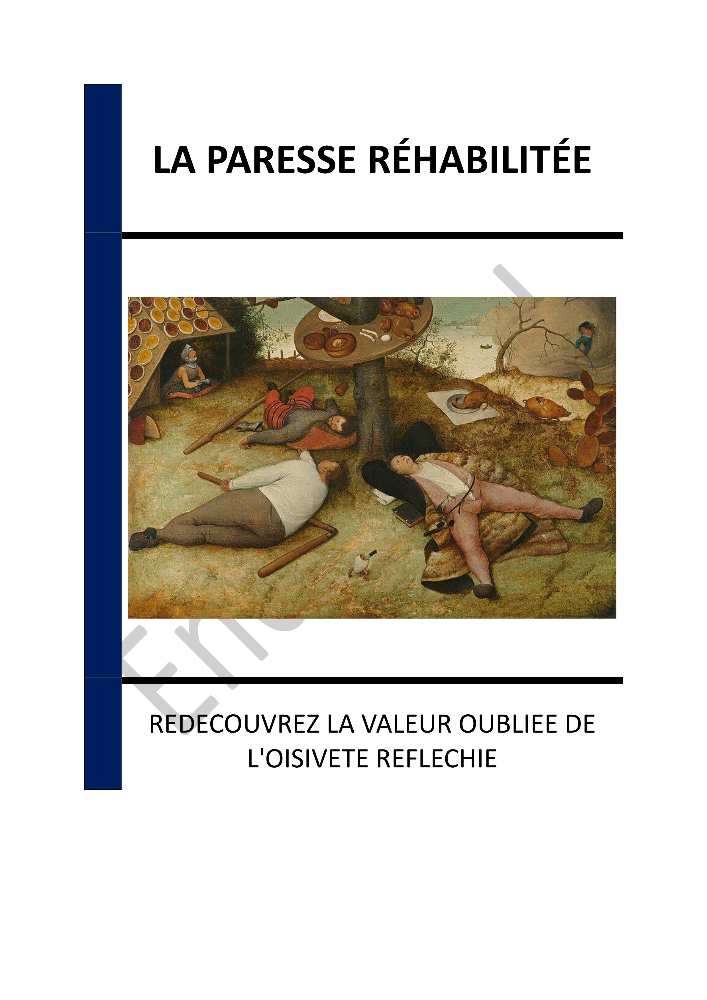

- INTRODUCTION - REDÉCOUVRIR LA PARESSE : UNE INVITATION À LA RÉFLEXION
- Chapitre 1 - LA PARESSE À TRAVERS L'HISTOIRE : UNE PERSPECTIVE ÉVOLUTIVE
- Chapitre 2 - LA PHILOSOPHIE DE LA PARESSE : ARISTOTE ET NIETZSCHE
- Chapitre 3 - LA PARESSE COMME SOURCE DE CRÉATIVITÉ ET DE RÉFLEXION
- Chapitre 4 - LES EFFETS DU CAPITALISME SUR LA PERCEPTION DE LA PARESSE
- Chapitre 5 - LA PARESSE DANS DIFFÉRENTES CULTURES ET ÉPOQUES
- Chapitre 6 - PRATIQUES QUOTIDIENNES POUR INTÉGRER LA PARESSE
- Chapitre 7 - LA PARESSE ET LE BIEN-ÊTRE PERSONNEL
- Chapitre 8 - VERS UNE NOUVELLE PHILOSOPHIE DU TEMPS ET DE L'EXISTENCE
- CONCLUSION - VERS UNE RÉHABILITATION DE LA PARESSE
📄 Consulter les annexes du livre
Mentions légales